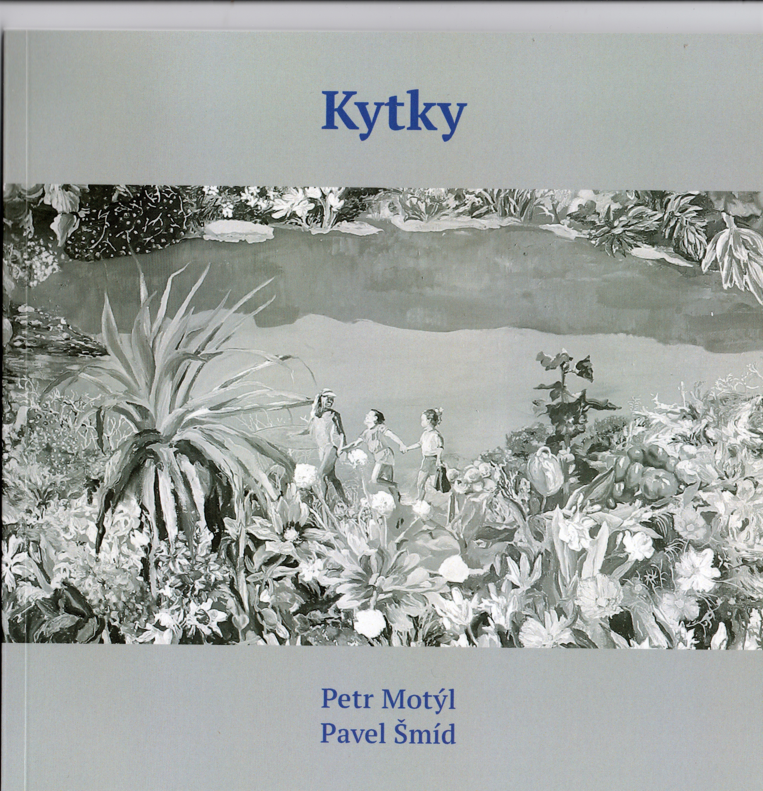

Petr Motýl - Kytky
Kytky

motýlsobě, 2025
Grafická úprava Jakub Krč.
Fotografie obrazů Pavla Šmída Marcel Rozhoň.
Vyšlo v nákladu 100 neprodejných výtisků.
Anotace
V této knížce byly prvotní obrazy Pavla Šmída, k nimž Petr Motýl vybral či přepracoval texty. Povětšinou jde o básně, které vznikly v maringotce v Kostelci u Heřmanova Městce v čase na počátku 21. století. V maringotce žil tehdy básník s kytkami v pevném souručenství, v údolíčku v Železných horách, kde pobýval coby „hlídač vrtů“ u geologické firmy.
Knížka je pojatá zhruba takto: na dvoustraně nalevo obraz Pavla Šmída, napravo báseň Petra Motýla. Uprostřed knížky je velký obraz. A ještě jsou tam výstřižky z obrazů.
Ukázka
VEČER
zkamenělá zahrada provléknout se do ní
podzimní mlhou
tajícím sněhem na jaře
nad nočním rybníkem světlo petrolejky
šplouchání vesel na hladině
klikaté větve dubu tak nízko nad cestičkou v parku
po vlasech a po kůži

Obraz Pavla Šmída, který je v knížce Kytky na dvoustraně s básní Večer. © Pavel Šmíd © foto Marcel Rozhoň
Pavel Šmíd (*1964) Absolvent AVU u Jiřího Sopka, často spojovaný s ostravskou výtvarnou scénou.
https://www.smidpavel.cz/autor
Z tvorby Pavla Šmída z roku 2026:

Minulost se směje © Pavel Šmíd © foto Marcel Rozhoň

Prdivoko © Pavel Šmíd © foto Marcel Rozhoň
Z textu k výstavě v Galerii Pecka v roce 2020:
Odkaz na text
Jak se nám Pavel Šmíd přiznal, jeho malířská neposlušnost má své kořeny v dětství. Byl poslušné dítě. To bylo sice chvályhodné, ale pro okolí nezajímavé. Neposlušní měli větší úspěch u okolí. Byli zajímaví. Tak se postupně naučil, že být alespoň občas a v něčem neposlušným je k úspěchu nutné. Navíc poslušnost je pohodlná, člověka uhoupá k pasivitě. V žití i v tvorbě. Člověk má tendenci poslouchat. Je to míň rizikové, míň náročné, pohodlné a nekonfliktní. A to je to, proč Pavel Šmíd poslušnost odmítá. V žití a zejména v tvorbě. Poslušnost jej, jak řekl, odvádí od pocitů. Lék na poslušné obrazy je snaha zachytit sdělované v hmotě i gestu. Proto jsou v jeho obrazech vždy neposlušnosti, jež je činí autentickými.

Petr Motýl a Pavel Šmíd v hospodě U Terflerů, 2016 © foto Jiří Škorvaga (v pozadí fotky básník Standa Dvorský)
Kratičké video na youtube s Pavlem Šmídem, které se vztahuje k jeho velké výstavě Rituály v ostravském Domě umění v roce 2023, u jejíž příležitosti byla vydána také monografie-katalog, kniha s názvem Rituály, jehož autorkou je Renata Skřebská, která byla i kurátorkou výstavy.
https://www.youtube.com/watch?v=6IyM_1ESOuI
A video z vernisáže: https://www.youtube.com/watch?v=hJ681AoGAUI
A ukázka z katalogu-monografie, z textu Renaty Skřebské:
Tvorba Pavla Šmída pracuje se skutečností, která se proměňuje ve významovou šifru. Od počátku, kdy se věnoval zejména grafice, až po současnost. Přestože postupně pracoval s fotografií a vycházel z konkrétní situace, nejedná se o bezmyšlenkovitou napodobeninu viděného světa. Vnější podnět postupně ztrácí na důležitosti ve prospěch zhuštění události a základní metaforické hloubky a nadčasovosti. Nejedná se o záludnost ani hádanku, Pavel Šmíd se snaží najít základní vzorce lidského chování. Rozmyté dětské tváře, které v sobě již nesou otisk dospělého, jsou možnou ochranou před potenciální otřesivostí života. Prolínání minulosti, přítomnosti i budoucnosti. Sdĕlení, která mohou být vyjádřena jen barvou a tvarem. Obsahy jsou slovy nepostižitelné. Symbolika těchto uměleckých děl je daná znalostí a pozorováním lidského života a lidského chování často v mezních situacích během určité lidské epochy. Jedná se o nesentimentální, analyzující díla, ale ne o otevřený konflikt. Spíše náznak, nápovědu, možnou obrannou reakci části své generace. Potřeba neplnit s proudem, ale ani se neangažovat. Uzavření se do sebe, do svého světa. Beznadějná opuštěnost, samota ve věčnosti. Možná vlastní životní postoj a realita doby, ve které žili jeho předkové a jeho generace, historická perspektiva a vizuální freska v oslňující formě a barvě. Pavel Šmíd je idealista bez ideálů a iluzí. Středobodem jeho tvorby je rodina, lidský život. Není rebel, neposluhuje režimu. Je uzavřený do sebe, nedůvěřivý vůči systémům, přístupný jen určitému okruhu přátel. Tvorbě Pavla Šmída dodává autenticitu a vypovídající sílu jeho schopnost zhmotnit to, co zůstává za fotografickou momentkou.

Pavel Šmíd 1990, © Pavel Šmíd
Malá historická momentka
Poprvé spolupracovali na knížce Petr Motýl a Pavel Šmíd v roce 1990. Vydání je doloženo i vědecky, následuje citace z bakalářské práce:
Autor: Martin Ťopek. Univerzita Pardubice. Fakulta filozofická.
Název bakalářské práce: Iniciály – sešity nezavedené literatury
Rok vzniku bakalářské práce: 2009
Odkaz
Citace:
Petr Motýl (*1964) – Poprvé vydával v Iniciálách. Všestranně zaměřený autor, na české literární scéně působí jako básník, prozaik, autor divadelních her, umělecký kritik, vydavatel časopisů a internetových periodik. S bratrem Ivanem pořádali na Ostravsku řadu literárních večerů (Literární harendy z let 1993 až 1994), dále vydávali časopis Modrý květ. Debutoval básnickou sbírkou Řemeslníci a máničky aneb Hospoda černě vypráví (1990). Ostravský původ se odrazil i v jeho dílech Jazykem haldy (1993) a Černá pěna Ostravice (1995).

Řemeslníci a máničky aneb hospoda černě vypráví, 1990. © Petr Motýl © Pavel Šmíd

Výtvarná skupina Přirození, 1999 © foto Martin Popelář
Zleva: Pavel Šmíd, Jan Balabán, Hana Puchová, Petr Pastrňák, Daniel Balabán, Zdeněk „Benda“ Janošec, Jiří „Paroh“ Surůvka
Několik odkazů
Vzpomínání Pavla Šmída na 80. a 90. léta na stránkách Paměti národa:
https://www.memoryofnations.eu/cs/smid-pavel-1964
Rozhovor Pavla Šmída s Ivanem Motýlem o ostravské výtvarné skupině Přirození v internetovém časopise Ostravan.cz 17.9.2022
Odkaz
Rozhovor Pavla Šmída s Martinem Jirouškem v deníku idnes 19. 11. 2023
Odkaz
© Petr Motýl / design Zebry